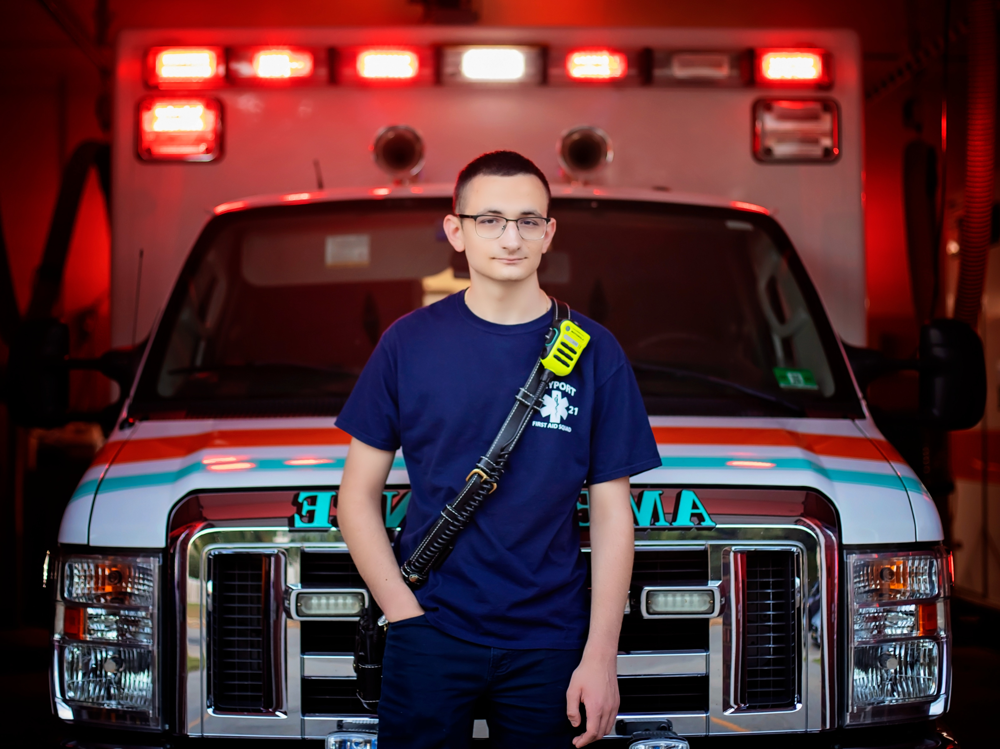

100+
Emergency Calls
3+
Years Experience
Keyport First Aid - Volunteer EMT
Serving as a dedicated volunteer EMT-B at Keyport First Aid, consistently improving emergency medical skills and patient care capabilities. Responded to medical emergencies, provided critical patient care, and coordinated with emergency services. Actively pursued additional training and certifications to enhance emergency response capabilities and maintain the highest standards of patient care in high-pressure situations.
Volunteer EMT-B
Emergency Response
Patient Care
Skill Development
Team Coordination